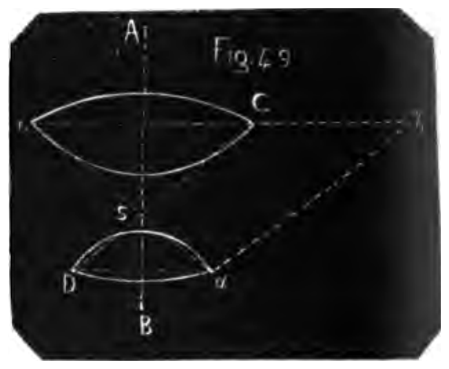

§ 112: Intersection of Two Virtual Lines & Circular Inversion¶
§ 112. Problem (Figs. 49–50, folio 0086–folio 0088, pp. 61–63). Given two virtual lines \((A, B)\) and \((C, D)\), construct their exact intersection point \(S\) by compass alone.
Mascheroni’s Construction: Reflect \(C \to c\) and \(D \to d\) across \((A, B)\) (§ 78). Complete parallelogram \(cDdE\) (§ 80) so that \((E, c) \parallel (D, d)\) and \(C, c, E\) form a triangle similar to \(\triangle SCc\). Constructing the fourth proportional \(cE : cD :: CC' : CS\) (§ 93) determines the exact radius \(CS\), and intersecting \(C(CS) \cap c(CS)\) yields \(S\)!
Modern Unification via Circular Inversion (August Adler, 1890): In adler-1890, Adler proved that a single circular inversion across reference circle OR—executed in just 3 circles (\(5 C_1 + 3 C_3\), \(S = 8\)): PO \(\cap\) OR \(= \{\)T1, T2\(\}\), followed by T1O \(\cap\) T2O \(=\) P satisfying \(OP \cdot OP' = R^2\)—maps every straight line not through O onto a circle through O, reducing both line–circle and line–line intersections directly to circle–circle intersections!

